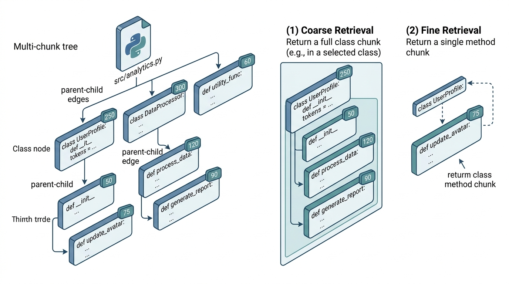

Section 11.1 established that a coding agent can see only a small fraction of any large codebase. Before we can retrieve the right fraction, we need two preprocessing steps: chunking (breaking source files into units that can be individually scored and selected) and summarization (compressing those units so more of them fit in the context window). This section builds both capabilities from scratch using tree-sitter for parsing, then shows the library shortcuts that production systems use.
1. Why Naive Chunking Fails
Imagine handing a colleague the top half of a function: the signature, the docstring, and seven lines of setup, but nothing after the for loop begins. Then you hand another colleague the bottom half: a loop body that references variables declared nowhere in the fragment, followed by a return statement whose meaning depends on the missing setup. Neither person can understand the code, and neither piece is useful in isolation. That is exactly what happens when a naive chunker splits source files into fixed-size token windows. The simplest such strategy uses windows of \(k\) tokens,
optionally overlapping by \(k/2\) tokens. This works reasonably well for natural-language
documents, where paragraph boundaries are somewhat arbitrary. For code, fixed-size
chunking is catastrophic. A 512-token window might split a function signature from its
body, separate a class definition from its methods, or cut a multi-line conditional
in half. The resulting chunks are syntactically invalid and semantically incoherent.
Chunking, in retrieval-augmented generation, partitions a source document into discrete, self-contained segments. Each segment can be independently embedded, indexed, and retrieved. Chunk quality matters because every downstream step (embedding, ranking, context packing) depends on whether each chunk represents a coherent semantic unit. A chunk that mixes unrelated logic produces a noisy embedding that matches the wrong queries. The core mechanism: a splitter walks the document according to some boundary rule (character count, line breaks, or parse-tree nodes) and emits one segment per boundary. Use syntax-aware chunking (described below) whenever the source has formal grammar (code, markup, structured data). Reserve fixed-size or sentence-level splitting for unstructured prose where no grammar is available.
What Goes Wrong in Practice
Consider what happens when you chunk a 60-line class with a 30-line window. The first
chunk contains the class declaration, __init__, and half of the second
method. The second chunk contains the rest of the second method and the start of the
third. Neither chunk is a self-contained unit. An embedding model (a neural network that maps text to fixed-length numerical vectors for similarity search) trained on these
chunks learns a representation of code fragments, not code concepts. A retrieval system
that returns these chunks gives the agent code it cannot understand without the
missing halves.
The solution is to chunk along syntactic boundaries defined by the language's parse tree. Functions, classes, and top-level assignment blocks are natural chunks because they reflect the programmer's intent about what constitutes a logical unit. Figure 11.2 illustrates the complete pipeline that implements this idea, from raw source files through syntax-aware chunking and summarization to a searchable chunk store.
2. Syntactic Chunking with Tree-sitter
When retrieval feeds a coding agent broken fragments, the agent generates code that references undefined variables, calls functions with wrong signatures, or silently drops logic from incomplete loops. Getting chunk boundaries right is the difference between an agent that fixes bugs and one that creates them.
Turning the idea of "chunk along syntactic boundaries" into working code requires a parser that understands every language your repository contains.
Tree-sitter
is an incremental parsing library that builds a concrete syntax tree (CST) for source
code in over 100 languages. Unlike an abstract syntax tree (AST) produced by Python's
ast module, a CST preserves every character of the original source,
including whitespace and comments. This makes tree-sitter ideal for chunking: we can
extract syntactically complete units and reconstruct the original code exactly.
In short: Let the parse tree, not a token counter, decide where one unit of meaning ends and the next begins.
import tree_sitter_python as tspython
from tree_sitter import Language, Parser
# Initialize the Python parser
PY_LANGUAGE = Language(tspython.language())
parser = Parser(PY_LANGUAGE)
def parse_source(source: str) -> "tree_sitter.Tree":
"""Parse Python source code into a concrete syntax tree."""
return parser.parse(bytes(source, "utf-8"))
# Parse a simple example
source = """
class DataLoader:
def __init__(self, path: str):
self.path = path
self.data = None
def load(self) -> list[dict]:
import json
with open(self.path) as f:
self.data = json.load(f)
return self.data
def preprocess(records: list[dict]) -> list[dict]:
return [r for r in records if r.get("valid")]
"""
tree = parse_source(source)
root = tree.root_node
print(f"Root type: {root.type}")
print(f"Children: {[child.type for child in root.children]}")With the syntax tree in hand, we walk it to extract top-level definitions as chunks. Each chunk preserves the complete syntactic unit: the full class with all its methods, or the full standalone function.
from dataclasses import dataclass
@dataclass
class CodeChunk:
"""A syntactically complete unit of code extracted from a source file."""
file_path: str
chunk_type: str # "class", "function", "assignment", "import_block"
name: str # symbol name (class/function name, or variable name)
start_line: int
end_line: int
content: str # the raw source code
token_estimate: int # estimated token count
@property
def id(self) -> str:
return f"{self.file_path}:{self.name}"
# Node types that represent top-level definitions in Python
CHUNK_NODE_TYPES = {
"class_definition",
"function_definition",
"decorated_definition",
"expression_statement", # top-level assignments
}
def extract_chunks(source: str, file_path: str) -> list[CodeChunk]:
"""Extract syntactically complete chunks from Python source."""
tree = parse_source(source)
chunks = []
for node in tree.root_node.children:
if node.type not in CHUNK_NODE_TYPES:
continue
content = source[node.start_byte:node.end_byte]
# Determine chunk type and name
if node.type == "class_definition":
name_node = node.child_by_field_name("name")
chunk_type = "class"
elif node.type == "function_definition":
name_node = node.child_by_field_name("name")
chunk_type = "function"
elif node.type == "decorated_definition":
# The actual definition is a child of the decorator wrapper
inner = [c for c in node.children
if c.type in ("class_definition", "function_definition")]
if inner:
name_node = inner[0].child_by_field_name("name")
chunk_type = "class" if inner[0].type == "class_definition" else "function"
else:
name_node = None
chunk_type = "decorated"
else:
name_node = None
chunk_type = "assignment"
name = (source[name_node.start_byte:name_node.end_byte]
if name_node else f"block_{node.start_point[0]}")
chunks.append(CodeChunk(
file_path=file_path,
chunk_type=chunk_type,
name=name,
start_line=node.start_point[0] + 1,
end_line=node.end_point[0] + 1,
content=content,
token_estimate=len(content.split()) * 2, # rough estimate
))
return chunks
# Demo
chunks = extract_chunks(source, "data_loader.py")
for chunk in chunks:
print(f" [{chunk.chunk_type}] {chunk.name} "
f"(lines {chunk.start_line}-{chunk.end_line}, ~{chunk.token_estimate} tokens)")Coarse chunks (entire classes) preserve internal coherence but consume large portions of the context budget. Fine chunks (individual methods) are budget-friendly but lose the class-level context that explains how methods relate. The optimal granularity depends on the task: for code completion within a method, a fine-grained chunk of that method plus its class signature suffices; for refactoring a class hierarchy, you need coarse chunks of multiple classes. The hierarchical chunking strategy in the next subsection lets you serve both use cases from a single index.
Common Misconception
A frequent misconception is that smaller chunks are always better because they save tokens and let you pack more pieces into the context window. In reality, a chunk that is too small loses the surrounding context that gives it meaning: a five-line method body without its class signature, imports, or sibling methods can be ambiguous or misleading to both the embedding model and the consuming agent. The goal is not to minimize chunk size but to maximize semantic self-containedness per chunk, which often means keeping logically coupled code together even at the cost of larger individual chunks.
3. Hierarchical Chunking
Real code has nested structure: a module contains classes, classes contain methods, methods contain blocks. A hierarchical chunking strategy preserves this nesting by producing chunks at multiple granularity levels, linked by parent-child relationships. When the retriever selects a method-level chunk, the packer can optionally include the parent class signature for context, spending only the tokens needed for the signature rather than the entire class body. Figure 11.2.1 illustrates hierarchical chunking with parent-child chunk relationships.

Checkpoint
So far: naive fixed-size chunking fails because it ignores code structure; syntactic chunking uses tree-sitter to extract complete functions and classes as chunks; hierarchical chunking adds parent-child links so the retriever can include a class signature when it returns a method, balancing context against token budget.
Mental Model
Think of hierarchical chunking like a library's catalog system. A library does not store books as loose pages (too fine) or as entire shelving units (too coarse). Instead, it indexes at multiple levels: the building has floors, each floor has sections, each section has shelves, and each shelf has individual books. When a patron asks for a specific recipe, the catalog directs them to the correct floor (the cookbook section), the right shelf (French cuisine), and the exact book. Crucially, the catalog card for the book also records which shelf and section it belongs to, so the patron can browse neighbors for related material. Hierarchical chunking works the same way: each method "book" carries a reference to its parent class "shelf," so the retrieval system can include the class signature as context without dragging along the entire shelf of code.
@dataclass
class HierarchicalChunk:
"""A chunk with parent-child relationships for multi-granularity retrieval."""
chunk: CodeChunk
children: list["HierarchicalChunk"]
parent_id: str | None = None
@property
def signature(self) -> str:
"""Extract just the signature (first line + docstring) for compact representation."""
lines = self.chunk.content.split("\n")
sig_lines = [lines[0]] # def/class line
# Include docstring if present
in_docstring = False
for line in lines[1:]:
stripped = line.strip()
if stripped.startswith('"""') or stripped.startswith("'''"):
sig_lines.append(line)
if in_docstring or stripped.count('"""') >= 2 or stripped.count("'''") >= 2:
break
in_docstring = True
elif in_docstring:
sig_lines.append(line)
else:
break
return "\n".join(sig_lines)
def build_hierarchy(source: str, file_path: str) -> list[HierarchicalChunk]:
"""Build a hierarchical chunk tree from Python source."""
tree = parse_source(source)
result = []
for node in tree.root_node.children:
if node.type == "class_definition" or (
node.type == "decorated_definition" and
any(c.type == "class_definition" for c in node.children)
):
# Get the class node (might be wrapped in decorator)
class_node = node if node.type == "class_definition" else next(
c for c in node.children if c.type == "class_definition"
)
class_name = source[class_node.child_by_field_name("name").start_byte:
class_node.child_by_field_name("name").end_byte]
class_content = source[node.start_byte:node.end_byte]
class_chunk = CodeChunk(
file_path=file_path, chunk_type="class", name=class_name,
start_line=node.start_point[0] + 1, end_line=node.end_point[0] + 1,
content=class_content, token_estimate=len(class_content.split()) * 2,
)
# Extract methods as children
children = []
body = class_node.child_by_field_name("body")
if body:
for child in body.children:
if child.type in ("function_definition", "decorated_definition"):
func_node = child if child.type == "function_definition" else next(
(c for c in child.children if c.type == "function_definition"), None
)
if func_node is None:
continue
method_name = source[func_node.child_by_field_name("name").start_byte:
func_node.child_by_field_name("name").end_byte]
method_content = source[child.start_byte:child.end_byte]
method_chunk = CodeChunk(
file_path=file_path, chunk_type="method",
name=f"{class_name}.{method_name}",
start_line=child.start_point[0] + 1,
end_line=child.end_point[0] + 1,
content=method_content,
token_estimate=len(method_content.split()) * 2,
)
children.append(HierarchicalChunk(
chunk=method_chunk, children=[], parent_id=class_chunk.id
))
result.append(HierarchicalChunk(
chunk=class_chunk, children=children, parent_id=None
))
elif node.type == "function_definition":
func_name = source[node.child_by_field_name("name").start_byte:
node.child_by_field_name("name").end_byte]
content = source[node.start_byte:node.end_byte]
chunk = CodeChunk(
file_path=file_path, chunk_type="function", name=func_name,
start_line=node.start_point[0] + 1, end_line=node.end_point[0] + 1,
content=content, token_estimate=len(content.split()) * 2,
)
result.append(HierarchicalChunk(chunk=chunk, children=[], parent_id=None))
return result
Consider a Django REST API with 200 files across models/,
views/, serializers/, and tests/. Flat
syntactic chunking produces roughly 1,500 chunks (functions and classes). Hierarchical
chunking produces the same 1,500 leaf chunks plus 180 class-level parent chunks and
a module-level summary for each file, totaling about 1,880 indexed units. When the
agent needs to fix a serializer validation bug, the retriever first matches the
relevant serializer class at the coarse level, then drills into the specific
validate_* method at the fine level. The packer includes the method body
(the leaf chunk) plus the parent class signature (compact, roughly 5 lines), giving
the agent both the specific code to edit and the class context to understand it.
Without hierarchical chunking, the agent would either get the entire 200-line
serializer class (wasting budget) or the isolated method (missing context).
4. Summarization Strategies
Chunking breaks code into retrievable units. Summarization compresses those units so that more of them fit in the context window. There are three levels of summarization, each trading fidelity for compression (see the Summarizer stage in Figure 11.2):
4.1 Signature Extraction
The lightest summarization extracts only the function or class signature: the name, parameters, type annotations, and return type. A 50-line function compresses to 1-2 lines. This is the approach used by integrated development environment (IDE) "outline" views, and it is often sufficient for an agent to decide whether a function is relevant and how to call it.
def extract_signature(chunk: CodeChunk) -> str:
"""Extract the signature (declaration + docstring) from a code chunk."""
lines = chunk.content.strip().split("\n")
signature_lines = []
# Collect the definition line(s), handling multi-line signatures
paren_depth = 0
for line in lines:
signature_lines.append(line)
paren_depth += line.count("(") - line.count(")")
if paren_depth <= 0 and (":" in line or "->" in line):
break
# Collect the docstring if present
remaining = lines[len(signature_lines):]
in_docstring = False
for line in remaining:
stripped = line.strip()
if not in_docstring and (stripped.startswith('"""') or stripped.startswith("'''")):
signature_lines.append(line)
if stripped.count('"""') >= 2 or stripped.count("'''") >= 2:
break # single-line docstring
in_docstring = True
elif in_docstring:
signature_lines.append(line)
if '"""' in stripped or "'''" in stripped:
break
else:
break
return "\n".join(signature_lines)
# Compression ratio example
full_code = '''def compute_attention(
queries: torch.Tensor,
keys: torch.Tensor,
values: torch.Tensor,
mask: torch.Tensor | None = None,
dropout_p: float = 0.0,
) -> torch.Tensor:
"""Compute scaled dot-product attention.
Args:
queries: (batch, heads, seq_len, d_k)
keys: (batch, heads, seq_len, d_k)
values: (batch, heads, seq_len, d_v)
mask: optional attention mask
dropout_p: dropout probability
Returns:
Attention output tensor of shape (batch, heads, seq_len, d_v)
"""
d_k = queries.size(-1)
scores = torch.matmul(queries, keys.transpose(-2, -1)) / math.sqrt(d_k)
if mask is not None:
scores = scores.masked_fill(mask == 0, float("-inf"))
weights = torch.softmax(scores, dim=-1)
if dropout_p > 0.0:
weights = torch.dropout(weights, p=dropout_p, train=True)
return torch.matmul(weights, values)'''
chunk = CodeChunk("attention.py", "function", "compute_attention", 1, 25,
full_code, len(full_code.split()) * 2)
sig = extract_signature(chunk)
ratio = len(full_code) / len(sig)
print(f"Compression ratio: {ratio:.1f}x")4.2 Docstring and Comment Extraction
When signatures are too terse, extracting docstrings and inline comments provides a
middle ground. Comments encode the programmer's intent ("why"), which is often more
useful for relevance scoring than the implementation details ("how"). A function
with the comment # Apply Kruskal's algorithm for minimum spanning tree
is immediately recognizable as graph-related, even if the variable names are opaque.
import ast
def extract_docstrings(source: str) -> dict[str, str]:
"""Extract all docstrings from a Python module, keyed by qualified name."""
tree = ast.parse(source)
docstrings = {}
for node in ast.walk(tree):
if isinstance(node, (ast.FunctionDef, ast.AsyncFunctionDef, ast.ClassDef)):
docstring = ast.get_docstring(node)
if docstring:
docstrings[node.name] = docstring
# Module-level docstring
module_docstring = ast.get_docstring(tree)
if module_docstring:
docstrings["__module__"] = module_docstring
return docstrings
def extract_comments(source: str) -> list[str]:
"""Extract all comments from Python source code."""
comments = []
for line in source.split("\n"):
stripped = line.strip()
if stripped.startswith("#"):
comments.append(stripped[1:].strip())
elif "#" in stripped:
# Inline comment (simple heuristic; ignores # inside strings)
idx = stripped.rfind("#")
comment = stripped[idx + 1:].strip()
if comment:
comments.append(comment)
return comments4.3 LLM-Generated Summaries
Signatures and comments capture structure and intent, but they cannot explain complex interactions between components or describe undocumented edge cases. The most powerful (and most expensive) summarization strategy uses an LLM to generate natural-language descriptions of code chunks. The LLM reads the full implementation and produces a 2-3 sentence summary covering purpose, algorithm, key dependencies, and edge cases. These summaries excel at embedding-based retrieval because natural-language queries match natural-language summaries more easily than raw code. The trade-off: each chunk requires an LLM call during indexing.
SUMMARY_PROMPT = """Summarize this code in 2-3 sentences. State:
1. What the code does (purpose and algorithm)
2. Key inputs and outputs (types and shapes)
3. Important dependencies or side effects
Code:
```python
{code}
```
Summary:"""
def generate_summary(code: str, llm_client) -> str:
"""Generate an LLM summary for a code chunk.
This is called during indexing (offline), not during retrieval.
Cost: ~500 input tokens + ~100 output tokens per chunk.
"""
prompt = SUMMARY_PROMPT.format(code=code)
response = llm_client.complete(prompt, max_tokens=150, temperature=0.0)
return response.text.strip()
# For a 1,500-chunk codebase at $0.003/1K input tokens (circa 2023):
# Cost estimate: 1500 chunks * 500 tokens * $0.003/1K = $2.25
# As of 2025, lightweight models such as GPT-4o-mini and Claude 3.5 Haiku
# have reduced per-token costs further, making this even cheaper.
# This is a one-time indexing cost; re-index only when code changes.Research Frontier
Aider's "repository map" system (Gauthier, 2024) demonstrated that an LLM can chunk and summarize an entire repository into a compact, navigable outline using tree-sitter tags, then dynamically expand only the relevant sections into the context window. This approach, described in the Aider technical report, reportedly achieves near-oracle retrieval performance on the SWE-bench benchmark (a standardized test suite of real GitHub issues used to evaluate autonomous code-generation agents) by letting the model itself decide which chunks to "zoom into" across multiple turns. More recently, the 2025 wave of "code graph" systems (such as Sourcegraph's SCIP-based indexing and Cursor's codebase-wide semantic index) go further by building a cross-file dependency graph over chunks, so the retriever can follow import chains and call hierarchies rather than relying on embedding similarity alone. These graph-augmented approaches reduce the false-negative rate (missing a critical dependency that lives in another file) that plagues flat chunk-and-embed pipelines. The trade-off is indexing complexity: building and maintaining a cross-file graph requires incremental re-parsing on every commit, which tools like Aider and Cursor now handle with tree-sitter's incremental parsing mode (a technique where the parser updates only the parts of the syntax tree affected by an edit, rather than re-parsing the entire file).
5. Building a Chunk Store
With chunking and summarization in place, we assemble them into a persistent chunk store: a structured database of all chunks in the repository, their summaries, and their relationships. The chunk store is the foundation that the retrieval system of Section 11.3 queries against.
import json
import sqlite3
from pathlib import Path
class ChunkStore:
"""Persistent storage for code chunks and their summaries."""
def __init__(self, db_path: str):
self.conn = sqlite3.connect(db_path)
self._create_tables()
def _create_tables(self):
self.conn.executescript("""
CREATE TABLE IF NOT EXISTS chunks (
id TEXT PRIMARY KEY,
file_path TEXT NOT NULL,
chunk_type TEXT NOT NULL,
name TEXT NOT NULL,
start_line INTEGER,
end_line INTEGER,
content TEXT NOT NULL,
token_estimate INTEGER,
parent_id TEXT,
FOREIGN KEY (parent_id) REFERENCES chunks(id)
);
CREATE TABLE IF NOT EXISTS summaries (
chunk_id TEXT PRIMARY KEY,
signature TEXT,
docstring TEXT,
llm_summary TEXT,
FOREIGN KEY (chunk_id) REFERENCES chunks(id)
);
CREATE INDEX IF NOT EXISTS idx_chunks_file ON chunks(file_path);
CREATE INDEX IF NOT EXISTS idx_chunks_type ON chunks(chunk_type);
CREATE INDEX IF NOT EXISTS idx_chunks_parent ON chunks(parent_id);
""")
def upsert_chunk(self, chunk: CodeChunk, parent_id: str | None = None):
"""Insert or update a chunk in the store."""
self.conn.execute(
"""INSERT OR REPLACE INTO chunks
(id, file_path, chunk_type, name, start_line, end_line,
content, token_estimate, parent_id)
VALUES (?, ?, ?, ?, ?, ?, ?, ?, ?)""",
(chunk.id, chunk.file_path, chunk.chunk_type, chunk.name,
chunk.start_line, chunk.end_line, chunk.content,
chunk.token_estimate, parent_id)
)
def upsert_summary(self, chunk_id: str, signature: str = "",
docstring: str = "", llm_summary: str = ""):
"""Insert or update summary data for a chunk."""
self.conn.execute(
"""INSERT OR REPLACE INTO summaries
(chunk_id, signature, docstring, llm_summary)
VALUES (?, ?, ?, ?)""",
(chunk_id, signature, docstring, llm_summary)
)
def get_chunk(self, chunk_id: str) -> dict | None:
"""Retrieve a chunk and its summary by ID."""
row = self.conn.execute(
"""SELECT c.*, s.signature, s.docstring, s.llm_summary
FROM chunks c
LEFT JOIN summaries s ON c.id = s.chunk_id
WHERE c.id = ?""",
(chunk_id,)
).fetchone()
if row is None:
return None
cols = ["id", "file_path", "chunk_type", "name", "start_line",
"end_line", "content", "token_estimate", "parent_id",
"signature", "docstring", "llm_summary"]
return dict(zip(cols, row))
def get_children(self, parent_id: str) -> list[dict]:
"""Get all child chunks of a parent (e.g., methods of a class)."""
rows = self.conn.execute(
"SELECT * FROM chunks WHERE parent_id = ?", (parent_id,)
).fetchall()
cols = ["id", "file_path", "chunk_type", "name", "start_line",
"end_line", "content", "token_estimate", "parent_id"]
return [dict(zip(cols, row)) for row in rows]
def commit(self):
self.conn.commit()
def close(self):
self.conn.close()The indexing pipeline ties everything together: walk the repository, parse each file, extract hierarchical chunks, generate summaries at each level, and persist (upsert) each record, meaning insert it if new or update it if it already exists.
def index_repository(repo_root: str, db_path: str,
extensions: set[str] = {".py"},
llm_client=None) -> dict:
"""Index an entire repository into the chunk store.
Args:
repo_root: path to the repository root
db_path: path to the SQLite database
extensions: file extensions to index
llm_client: optional LLM client for generating summaries
Returns:
Statistics about the indexing run.
"""
store = ChunkStore(db_path)
stats = {"files": 0, "chunks": 0, "summaries": 0}
for path in Path(repo_root).rglob("*"):
if path.suffix not in extensions or not path.is_file():
continue
if any(part.startswith(".") for part in path.parts):
continue # skip hidden directories
try:
source = path.read_text(encoding="utf-8")
except (UnicodeDecodeError, PermissionError):
continue
rel_path = str(path.relative_to(repo_root))
hierarchy = build_hierarchy(source, rel_path)
stats["files"] += 1
for h_chunk in hierarchy:
store.upsert_chunk(h_chunk.chunk, parent_id=h_chunk.parent_id)
stats["chunks"] += 1
# Generate summaries
sig = extract_signature(h_chunk.chunk)
docstrings = extract_docstrings(source)
doc = docstrings.get(h_chunk.chunk.name, "")
llm_summary = ""
if llm_client and h_chunk.chunk.token_estimate > 50:
llm_summary = generate_summary(h_chunk.chunk.content, llm_client)
stats["summaries"] += 1
store.upsert_summary(h_chunk.chunk.id, sig, doc, llm_summary)
# Index children (methods)
for child in h_chunk.children:
store.upsert_chunk(child.chunk, parent_id=h_chunk.chunk.id)
child_sig = extract_signature(child.chunk)
child_doc = docstrings.get(
child.chunk.name.split(".")[-1], "")
store.upsert_summary(child.chunk.id, child_sig, child_doc, "")
stats["chunks"] += 1
store.commit()
store.close()
return stats
The LlamaIndex library
provides a CodeSplitter that wraps tree-sitter and handles 15+ languages
out of the box. In four lines of code, it replaces our entire chunking pipeline:
from llama_index.core.node_parser import CodeSplitter
splitter = CodeSplitter(language="python", chunk_lines=60, chunk_lines_overlap=10)
nodes = splitter.get_nodes_from_documents(documents)
LlamaIndex also provides SentenceSplitter with configurable overlap for
mixed code-and-prose documents. The four lines above replace roughly 150 lines of our
hand-built chunker. The trade-off: LlamaIndex's splitter does not produce hierarchical
chunks with parent-child relationships, so you lose the ability to include a class
signature when retrieving a method. For most applications, the simplicity is worth it.
As of 2025, LlamaIndex also offers a SemanticSplitterNodeParser that uses embedding similarity to detect topic boundaries within a file, and LangChain provides a comparable RecursiveCharacterTextSplitter with language-aware separators for over 15 languages.
Well-documented code is easier to chunk and summarize. A function with a thorough docstring produces a high-quality signature summary for free. A function with no comments and single-letter variable names forces the summarizer to infer intent from structure alone. In informal experiments on open-source Python projects, the correlation between comment density and retrieval accuracy (measured by whether the correct function is returned for a natural-language query) can be notable, with reported values around \(r \approx 0.4\). This is not because comments help the retrieval model directly (embeddings are computed on the full code), but because well-documented code tends to have descriptive function names and type annotations, which are the features that embedding models rely on most.
Step-Through: Hierarchical Chunking on a Tiny Module
Trace through the build_hierarchy function (Listing 11.8) with this 18-line source file:
class Dog:
def __init__(self, name):
self.name = name
def bark(self):
return "Woof!"
def adopt(shelter, dog):
shelter.append(dog)
Step 1. tree-sitter parses the source and returns a root node with two children: a class_definition (lines 1 through 6) and a function_definition (lines 8 through 9).
Step 2. The first child is a class_definition, so we enter the class branch. We extract class_name = "Dog" and build a CodeChunk(chunk_type="class", name="Dog", start_line=1, end_line=6, token_estimate=30).
Step 3. We inspect the class body and find two function_definition children: __init__ (lines 2 through 3, token_estimate=14) and bark (lines 5 through 6, token_estimate=8). Each becomes a child HierarchicalChunk with parent_id="Dog".
Step 4. The second root child is a standalone function_definition. We extract CodeChunk(chunk_type="function", name="adopt", start_line=8, end_line=9, token_estimate=12) with no children and parent_id=None.
Result: 3 leaf chunks (Dog.__init__, Dog.bark, adopt) plus 1 class-level parent chunk (Dog), totaling 4 indexed units. Retrieving Dog.bark lets the packer include Dog's signature (class Dog:) for context at a cost of only 2 tokens instead of the full 30.
Real-World Application: Sourcegraph Code Intelligence
Sourcegraph's code search platform uses SCIP (Source Code Intelligence Protocol) to chunk entire codebases at the symbol level, extracting functions, classes, and type definitions with their cross-file references. When a developer searches for "authentication middleware," Sourcegraph retrieves the relevant middleware function chunk along with its call sites and type definitions from other files, because the SCIP index records precisely which symbols each chunk references. This graph-aware chunking is what allows Sourcegraph's Cody assistant to answer questions that span multiple files without embedding the entire repository.
Try It: Compare Chunking Strategies on a Real File
Build and compare three chunking strategies on a single Python file from any open-source project.
(1) Install the dependencies: pip install tree-sitter tree-sitter-python tiktoken.
(2) Pick a Python file with at least 200 lines and multiple classes (for example, download requests/models.py from the Requests library on GitHub).
(3) Implement a naive fixed-size chunker that splits the file into 512-token windows with 50% overlap, using tiktoken to count tokens accurately. Record how many chunks are produced and manually inspect two chunks to check whether they split a function in half.
(4) Run the extract_chunks function from Listing 11.7 on the same file. Compare the chunk count, average chunk size, and whether each chunk is syntactically complete (check that every chunk parses without errors via ast.parse).
(5) Measure the retrieval impact: embed all chunks from both strategies using a free embedding API or sentence-transformers, query with a natural-language description of one function in the file (for example, "prepare the HTTP request body"), and compare which strategy ranks the correct chunk highest. You will typically observe that the syntax-aware chunks rank the target function higher (often in the top 3), while the fixed-size chunks tend to scatter relevant code across multiple lower-ranked fragments.
Exercise 11.2.1
Given a Python file containing a 120-line class with four methods (averaging 25 lines each) and two standalone functions (15 lines each), calculate: (a) how many chunks a fixed-size splitter with a 512-token window and 50% overlap produces (assume roughly 2 tokens per whitespace-delimited word, and the file has about 600 words), and (b) how many chunks the syntactic chunker from Listing 11.7 produces. For each strategy, state how many of the resulting chunks are guaranteed to be syntactically valid Python.
Hint
For (a), compute total tokens (600 words x 2 = 1,200 tokens), then apply the sliding window formula: with window size 512 and step size 256, the number of windows is ceil((1200 - 512) / 256) + 1. None of these windows are guaranteed to align with syntactic boundaries. For (b), the syntactic chunker emits one chunk per top-level definition: 1 class + 2 functions = 3 chunks, and all three are syntactically complete by construction.
Lab: Measuring Chunk Quality Across Granularities
Goal: Empirically determine how chunk granularity affects embedding-based retrieval accuracy for code search.
Tools needed: Python 3.10+, tree-sitter, tree-sitter-python, sentence-transformers (the all-MiniLM-L6-v2 model runs on CPU in seconds; as of 2025, newer models such as all-mpnet-base-v2 or Nomic's nomic-embed-text-v1.5 offer stronger retrieval quality at similar speed), and a single open-source Python file with at least 10 functions (e.g., httpx/_client.py).
Procedure (15 to 20 minutes): (1) Chunk the file three ways: fixed 256-token windows, fixed 512-token windows, and syntactic chunks via tree-sitter. (2) Embed all chunks with SentenceTransformer.encode(). (3) Write five natural-language queries describing specific functions in the file (e.g., "send an HTTP GET request with timeout"). (4) For each query, compute cosine similarity against all chunks and record the rank of the chunk containing the target function.
What to vary: Window size (128, 256, 512), overlap ratio (0%, 25%, 50%), and whether you embed raw code or signature-only summaries.
What to observe: Mean reciprocal rank (MRR; the average of 1/rank for each query's correct result, so higher is better) across your five queries for each configuration. Syntactic chunks typically achieve the highest MRR , and among fixed-size strategies, larger windows with overlap tend to outperform smaller windows without it.
Exercises
- (Conceptual) Explain why fixed-size chunking with overlap is particularly problematic for Python (as opposed to, say, Java or Go). Consider how Python uses indentation for scoping and what happens when a chunk boundary falls mid-indent.
-
(Coding) Extend the
extract_chunksfunction in Listing 11.7 to handle JavaScript/TypeScript files. You will need thetree-sitter-javascriptortree-sitter-typescriptgrammar packages. Identify the node types that correspond to top-level definitions in those languages (hint:function_declaration,class_declaration,lexical_declaration). - (Analysis) Index a medium-sized open-source Python project (e.g., Flask or FastAPI) using the pipeline from Listing 11.13 (without LLM summaries). Report the number of files, chunks, and the distribution of chunk sizes (in tokens). What percentage of chunks are under 200 tokens? Under 500? What does this distribution suggest about the optimal embedding model input length?
What's Next
We now have a repository decomposed into semantically meaningful, summarized chunks. In Section 11.3: Retrieval-Augmented Code Generation, we build the retrieval system that, given a task description, ranks these chunks by relevance and packs the best ones into the context window using dense embeddings, BM25 (a classical term-frequency scoring algorithm widely used in text search), and hybrid search.